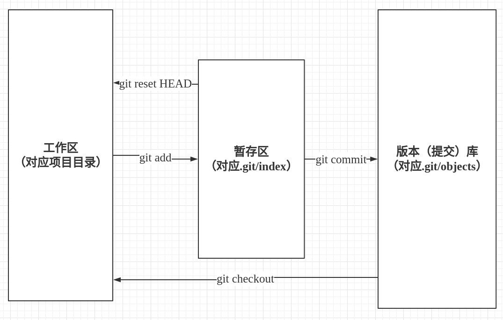
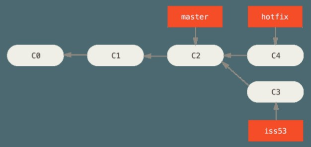

git2
Table of Contents
1 版本管理工具常用功能
版本管理工具最常用的功能包括几个方面:
- 建立版本库
- 以便将项目的每个版本都保存下来
- 以便将项目的每个版本都保存下来
- 和版本库交互
- 向版本库中添加新版本(提交)
- 从版本库中取出某个历史版本(检出)
- 向版本库中添加新版本(提交)
- 同时进行多项工作
- 比如暂停正在开发的新功能，先进行bug fix；完成bug fix后再继续之前的新功能开发
- 比如暂停正在开发的新功能，先进行bug fix；完成bug fix后再继续之前的新功能开发
- 查看历史记录
- 比如通过历史查找某个文件都被谁修改过
- 比如通过历史查找某个文件都被谁修改过
- 和其他用户协作
- 将自己的修改放到一个公共区域，以便其他人可以拉取
- 从公共区域拉取别人的修改
- 将别人的修改和自己的修改合并
- 将自己的修改放到一个公共区域，以便其他人可以拉取
注意上面说的版本不是指软件发布版本,而是指任一一次被记入历史的改动。
下文中的提交和版本都是指 “一次被记入历史的改动”。
2 Git 实现
Git的核心概念是提交和分支。
- 提交保存了修改记录，包括修改文件、修改人、修改时间，并把上一次提交作为本次提交的父提交。
提交本身记录了变更，提交之间的父子关系记录了变更历史。
- 分支是指向提交的指针，用于建立多工作流。
分支保存了不同工作的进度，并帮助实现工作流的切换和合并。
2.1 建立版本(提交)库
执行git init进行初始化时, Git会在项目根目录创建版本(提交)数据库: 项目根目录下的.git/objects.
2.2 和版本库交互

2.2.1 添加到暂存区–git add
暂存区只是一个简单的标记区, 被标记的文件信息存放在.git/index中。 git add 会将指定的文件放入暂存区并随下一次提交保存到版本库中,
而未标记的文件会继续留在工作区。暂存区的意义是让用户可以选择性的只提交部分改动。
2.2.2 创建一个新版本——git commit
git commit 会根据暂存区(.git/index)中标记的文件加上修改人/修改时间等内容生成一个新提交。
新提交以修改内容的hash码命名，压缩后保存在版本库(.git/objects)中。
2.2.3 历史记录
新提交会把上一次提交作为父提交,所以从当前提交就可以追溯到所有的提交历史。 git log命令会展示从指定提交开始的历史记录。
2.2.4 取出历史版本——git checkout
git checkout 会将指定提交的内容从版本库中移出到工作区——主要是解压版本库中压缩保存的文件并覆盖工作区中相应的文件。
如果覆盖会导致工作区中的修改丢失，git会拒绝执行checkout并给出相应提示。比如: checkout需要将Main.java覆盖为历史版本，
而用户也在工作区中修改了Main.java，则checkout会被拒绝以防止用户的修改丢失。 此时用户可以先提交工作区中的修改再执行checkout.
2.3 同时进行多项工作
同时进行多项工作的关键包括:
- 保存每项工作的进度
- 能在不同的工作间切换
- 能将不同的工作合并，比如将hotfix和新功能合并
git的提交对应了工作进度，而分支提供了进度保存，恢复及合并功能。
2.3.1 分支概述
提交之间通过单向父子关系构成了一个"单链表". 分支本质上就是一个指向提交的指针，他作为“单链表”的头保存我们的工作进度。 如下图:

master和testing分支分别指向不同的commit, 也分别保存了我们两项工作的进度。图中的HEAD指向master说明master是“当前分支”。
当我们执行commit命令时, git会自动把“当前分支”指向新创建的提交, 即: 使用“当前分支”保存我们最新的工作进度。
如果分支损坏了,我们就会丢失提交(单链表的头丢失了,我们就没办法引用单链表了)。
2.3.2 分支合并
- 每次开始一项新的工作之前，先创建一个分支用于保存新工作的进度。如下图:

我们分别在hotfix和issue53上进行不同的工作C4和C3.
- 合并hotfix到master
master分支指向的C2恰好是hotfix分支指向的C4的父提交，所以合并hotfix到master只需要让master指向C4即可，如下:

像上图这种，通过让落后分支指向领先分支的提交即可完成合并的情况叫做Fast-forward。
- 合并issue53到master

上图中由于issue和master分别在C2的基础上进行了提交，所以需要创建一个新的提交C6来合并分叉。
合并完成后，hotfix和issue53包含的提交都可以由master指向的C6进行追溯，此时我们可以安全的删除hotfix和issue53分支。
2.3.3 分支常用命令
- 分支创建
git branch hotfix release_1.0 # 以 =release_1.0= 为基准建立了一个新的hotfix分支 git checkout -b hotfix release_1.0 # 以 =release_1.0= 为基准建立了一个新的hotfix分支，并检出
- 分支切换
git checkout testing
git会把testing分支指向的提交对应的内容覆盖到工作区中, 并将HEAD(.git/HEAD) 指向testing。
由于涉及到内容覆盖, 如果覆盖会导致用户工作区中的修改丢失, 出于保护git会拒绝切换。
- 分支合并
git merge hotfix # 将hotfix合并到当前分支
- 合并冲突解决
当要合并的两个分支都修改了同一个文件时，会产生合并冲突。通过下面的命令启动冲突合并工具进行合并。
git mergetool
合并完成后, 需要重新将合并后的文件add并commit.
2.3.4 游离态
当执行git checkout + 某次提交的hash码时, git会将指定的提交检出到工作区并进入游离态。
游离态是为了查阅而设计的，可以粗略理解为“软只读”模式——用户可以修改工作区的内容，但不能提交到版本库。
git内部使用HEAD(.git/HEAD)保存工作区当前所在的提交，通常情况下HEAD指向一个分支的名字——当前分支。
当执行commit命令时，git会自动将当前分支指向新创建的提交——通过HEAD指向的当前分支保存用户的工作。
但是处于游离态时，HEAD指向的是checkout中指定的hash码，而不是分支名，所以也就不存在当前分支了。
总之，游离态的含义就是不在任何一个分支上, 也就不存在保存用户工作的指针，所以也就不能执行提交。
要退出游离态就需要重新回到某个分支上，可以是已经存在的分支，也可以是新创建的分支。
git checkout -b <branch_name> # 通过新创建并切换到该分支退出游离态 git checkout dev # 通过回到一个已存在的分支退出游离态
2.4 和其他用户协作
上面的内容都是在操作用户本地的版本库, 和其他用户协作时,就需要和远程仓库交互。
git会将远程仓库的所有数据克隆一份存放在本地，
以实现数据的分布式保存。远程分支其实有两个不同的含义，一个是保存在本地的远程分支
2.4.1 添加远程仓库
git remote add origin git@inner/xx.git # 新添加远程仓库，名字为origin git remote add opensource git@opensource/xx.git # 新添加远程仓库，名字为opensource
远程仓库可以有多个，比如: origin用于公司组内开发，opensource用于获取开源社区的贡献。
2.4.2 拉取远程仓库的内容
git会分开存放本地和远程分支的信息，本地分支位于.git/refs/heads/, 远程分支位于.git/refs/remotes/
比如: .git/refs/heads/dev文件的内容是"8e4d30ca29bbff2cf19515024f0a75a590b54ab3", 表示本地的dev分支指向8e4d3提交。
.git/refs/remotes/origin/dev文件的内容是"b14ebc4d25d0424d447a2130b9dcf34718bd0618", 表示远程仓库origin的dev分支指向b14eb提交。
git fetch origin master:refs/remotes/origin/mymaster # 将远程仓库origin中的master分支拉取到本地，存放在.git/refs/remotes/origin/mymaster git fetch origin # 将远程仓库origin中的所有分支拉取到本地
这个命令会修改版本库(.git/object/)但不会修改工作区。执行该命令后，本地将拥有全部远程仓库的内容；如果远程服务器损坏，只需将本地仓库重新上传即可恢复。
2.4.3 检出远程分支
git checkout -b dev origin/dev # 将.git/object中的内容放入工作区，这样我们就可以在工作区中看到别人的修改了
2.4.4 将远程分支合并合并到当前分支
git merge origin/master # 将远程仓库origin的master分支合并到当前分支
2.4.5 将自己的修改分享到远程仓库
git push origin master:refs/heads/master # 将本地的master分支的内容推送到远程仓库origin的远程分支master
注意: 如果远程仓库中不存在master分支，上述命令会新建远程分支master；如果已经存在，则会将本地的master与远程的master合并。
2.4.6 分支track
通过建立本地分支与远程分支的关联关系，可以简化一些命令。如果我们本地的master分支和远程的origin/master分支有track关系，那么如下两条命令是等价的。
git push origin master:refs/heads/master git push origin master # 省略远程分支名时，默认使用本地分支track的远程分支
- 建立track关系
git branch --set-upstream-to origin/dev # 通过--set-upstream-to 选项可以建立本地分支和远程分支的对应关系 git checkout -b issue31 origin/issue31 # 从远程分支检出本地分支时, git会自动建立track关系
- git pull
git pull命令会拉取远程仓库的内容,并将当前分支track的远程分支merge到当前分支。也就是
git fetch origin git merge origin/<当前分支track的远程分支> git pull origin/<branch_name>